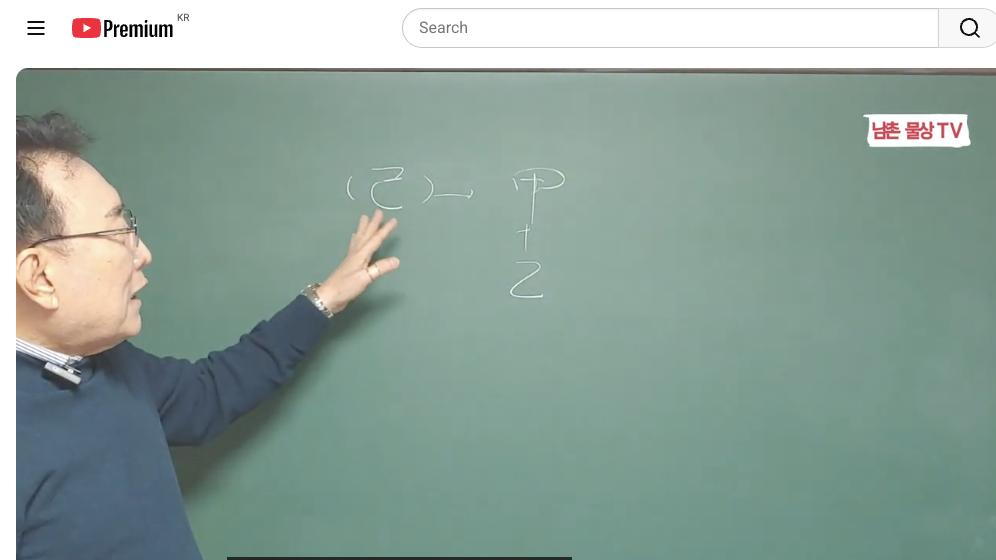
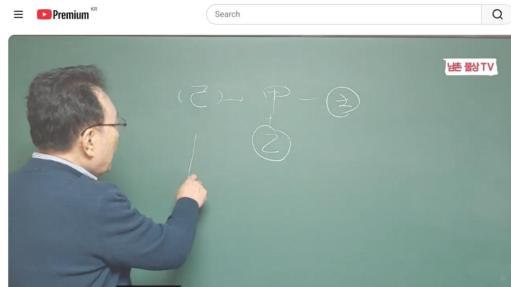
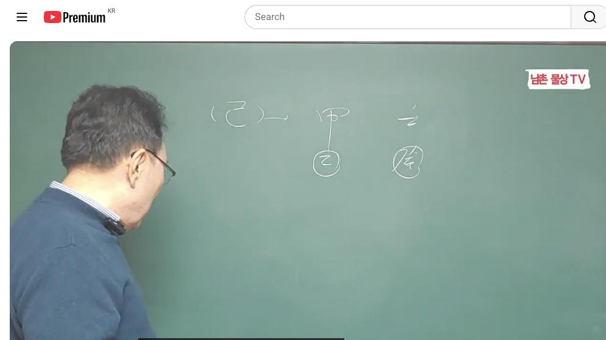

남촌물상TV 전체 문서 › 동영상 V0046
[기본원리]18강 기토 일간 인생역전 기회를 잡는 방법 여기에 있다 상담문의 : 010-3139-6645

| 문서 번호 | V0046 (동영상) |
|---|---|
| 영상 URL | https://www.youtube.com/watch?v=XaOKAUnnC0I |
| 영상 ID | XaOKAUnnC0I |
| 게시일 | 2024-02-05 |
| 길이 | 26:24 (1584초) |
| 조회수 | 4,703회 (수집 시점 기준) |
| 카테고리 | Howto & Style |
| 자막 | ko (자동생성) |
| 수집 시각 | 2026-08-29 18:44 (KST) |
영상 설명 (YouTube 설명 원문 그대로)
기토 일간 인생역전 기회를 잡는 방법 여기에 있다 #기본원리 #인생역전 #기토
전체 자막 (548구간 · 타임스탬프 클릭 시 해당 장면으로 이동)
[0:01][음악]
[0:07]자 이번 시간 이제 기토의 설명을
[0:10]드리겠습니다 자
[0:13]기토 자 기토는 우리가 물상 론에서
[0:16]뭐라 그랬습니까 작은 땅 구역이
[0:18]정리된 땅 이렇게 표현하잖아요
[0:21]그래서 작은 땅이 어떻게
[0:24]활용하느냐 큰 땅은 우리가 이미 황나
[0:27]벌판 이렇게 크게 돼 있지만 작은
[0:30]땅은 이미 구역이 정리된 땅 그래서
[0:33]땅은 보통 우리가 하나라고 그래요
[0:35]그래서 땅은 하나라고 하지만 불상에서
[0:39]땅을 구별할 수가 있다 원체 전체
[0:42]그려진 원인의 땅이 있다면 그 그것
[0:45]무토 기토는 그 땅 자체를 선이 구
[0:49]구역을 정리해서 자른 땅을 우리는
[0:51]기토 응용을 하자 그 얘기입니다
[0:54]그래서 구역이 정리된 땅에서 우리가
[0:56]뭐 떻게 살아요 이미 구역이 정리된
[0:59]땅에서 주택도 짓고 작은 땅에 작은
[1:02]주택도 짓고 작은 정원도 만들고 또
[1:06]문전 옥답 되고 꽃밭도 되고 이렇게
[1:08]응용하는 방법이 각자 다릅니다 그래서
[1:12]땅은 항시 받아들이지만 기토의
[1:14]성향이라 것은 구역이 정의된 땅에서
[1:17]살기 때문에 자체가 넓은 것이 아니라
[1:20]약간 소극적인 기지를 가지고 있다
[1:22]이게 특징이에요
[1:24]그러나 기초는 기토가 욕심은 많습니다
[1:27]왜 기토는 무슨 욕심 관 욕심 명예의
[1:31]강하다 뭔 얘기냐 기토는 뭘 끌고
[1:33]와요 갑목을 끌고 오기 때문에 자기의
[1:37]기토가 갑목을 그리는거다 자기가
[1:39]심어질 땅은 을목 있데 기토를 기토가
[1:42]갑목을 불리 때문에 명예에 대한 것이
[1:45]집착이 강하다 그래서 욕심도 강하다
[1:48]이렇게 보는 거예요 그래서 기토
[1:50]일주가 욕심이 전 같았지만 욕심이
[1:52]많습니다 무토일주 욕심이 맞냐 그렇지
[1:56]않아요 무주는 가진게 기 때문에 크게
[2:00]욕심은 안보도 내가 있어 하는 그런
[2:02]안정감을 가지고 있다 차이예요 그럼
[2:04]초조한 마음이 누구가 더 있어 무토
[2:06]다 기토가 초조한 감이 더 있다이
[2:09]이해하시면 되잖아요 간단하게 이게
[2:10]물상론 해법이 그래서 기토가 가진
[2:15]것은 이걸 그러 우리가 그 물상 물이
[2:18]살아 나가는 방법이 있을 거 아니에요
[2:20]너 그렇게 살지 마 갑목을 그릴게
[2:24]아니라 각기 합을 해서 우리는 뭘로
[2:27]봐요 을목 만든다 그 말입니다 이게
[2:30]우리가 각기 합가 아니라 각기 합가
[2:35]아니라 우리는 각기 합을 해서 양간이
[2:38]응간 바뀌는 것 그래서 네가 생각하는
[2:42]것은이 각기 합을 해서 작은 나무가
[2:46]되듯이 너는 작은 땅에 작은 나무를
[2:49]안락하게 사는게 좋다라고 답을 줄 수
[2:51]있다 그래서이 기토 일주이 욕심을
[2:55]강하게 부리지 말고 한 가정에
[2:57]충실하고 한 가정은 내새끼는 많이
[3:00]생기듯이 가장 끔찍하게 생각하 기토
[3:02]일주에 그래서 기토일주 생활 방법을
[3:06]제대로 표현한게 천가 합의 원리예요
[3:08]그 천관 합의 원리를 어떤 사람
[3:11]얘기하면 뭐 네가 뭐라 하지만 다
[3:14]어디서 만들고 어디서 나온 거 있단
[3:15]말이에요 근거는 다 있어요 그래서
[3:18]기토가 네가 하진 욕심을 합에서
[3:21]버려서 버리고 벌목으로 작은 가정에
[3:25]생활하게 좋다 이렇게 정의진 거란
[3:27]말이에요 자
[3:29]그러면 지토 일주에 재물은 임수가
[3:33]있고 뭐가 있어요 계수가 있잖아요
[3:35]그죠 계수가 있고 임수가 있어요
[3:38]그러면 우리가 봤을 때 기토 니가
[3:41]욕심에 큰 재물을 갖게 된다면 너는
[3:45]뭐요 땅이 무너져 그 말로 같은
[3:47]얘기다 그 얘기 아니에요 자 그러면
[3:51]우리가 생각해 보세요 욕심을 크게
[3:54]갖는다는 얘기는 목을 심어서 욕심을
[3:57]크게는다
[3:59]얘기죠 을 토에 심어진다 가정하면
[4:02]임수의 물을 갖다 주게 되면 깨지 안
[4:05]깨죠 기토 치가 깨지는 거예요 그럼
[4:08]토국 수가 여기가 뭐예요 재물인
[4:15]재물인 여자 일주의 갑목이 남편
[4:19]아니에요 남편하고 내 그 허울 좋 내
[4:23]남편하고
[4:24]살면서대 토국 수 돈을 자꾸 주다
[4:27]보니까 수생목 개서 깨진 것은 내가
[4:31]깨지고 그 갑목은 넓은 땅으로
[4:34]도망가더라 이런 답이 나오는 거에요
[4:37]그래서 기토 일주가 임수이 올 때
[4:40]이혼율이 많다 이렇게 간단하게 보시는
[4:42]거예요 그게 물상론 가장 편한 겁니다
[4:45]이혼시기 결혼시기 물상론 같이
[4:48]정확하게 본게 없어요 그래서 이런
[4:50]것을 우리 물상론에서 쉽게 해석하기
[4:53]때문에 천간합의 원리를 알았을 때
[4:55]해법을 찾는 거예요 그냥 각기 합해
[4:58]끝나는게 아니라
[5:00]우리는이 토가 무슨 토인지도
[5:03]몰랐잖아요 기토 모냐 결과적으로
[5:05]뭐예요 우리는이 기토의 성향이 갑도
[5:09]기토가 되라 그런 얘기 같은 얘기예요
[5:10]그래서 기토와 각기 합의 성향은
[5:14]이러한 가정의 문제를 해석하는 기초
[5:18]원인으로 봐라 그래서 임수는 우리가
[5:21]고전에서 기토 타임 이렇게 얘기는 써
[5:24]있어요 그런 줄 알면서도 기토 타기
[5:26]어쩔 건데 그것이 없잖아요 그래서
[5:30]양간의 법칙을 쓰게 되면 을목이 되면
[5:33]너는 여기에 심어져 만약 을목이
[5:37]심어요 그러면 임수가 와도 무어지 않
[5:41]무하지 않고 섬으로서 존재한다 이렇게
[5:44]이해가면 되잖아요 그래서 기토 일주가
[5:47]좋아하는 나라는 섬나라를 주로 좋아해
[5:50]그래서 영국 그다음에 호주 일본 이런
[5:53]나라를 좋아한 이유가 인도네시아 등
[5:56]이런 나라를 좋아한다 그 말이에요
[5:58]그게 다의 있는 거예요 그저 김교수
[6:01]너 말이야 너 무슨 생각으로가 그
[6:03]얘기해 이런 근거를 댈 수 있어야
[6:05]한다 확실하게 저는 근거를 대고
[6:07]있습니다 그 여러분들이 공부하실 때
[6:10]이런 기토 성향이 구체적으로 제가
[6:12]설명을 드린 거예요 그래서 그러면 자
[6:16]토일 주에서 임수 관계 해결 됐죠 자
[6:19]계수 관계 자 계수의
[6:22]관계성은이 계수가 딱 맞는 을목이
[6:26]남는 물 있죠 그러면 가욕
[6:30]낸다면 어떤 일이 거냐 욕심이 낸다면
[6:35]계수 물을 갖다 감목 되려면 돈벌어다
[6:38]남자한테 바치는 주밖에 안 돼 그래서
[6:40]고생해서 남자 뒷발에 주니까 그
[6:43]남자는 어디로가 무토를 찾아서
[6:46]떠나가더라 이런 얘기예요 간단하게
[6:48]이런 방법을 연구한게 상이기 때문에
[6:51]우리 삶의 지혜와 살아가는 방법이
[6:54]무엇인가를 가장 쉽게 이해할 수
[6:57]있다이
[6:58]말이에요 그래서 우리 들 지금까지
[7:00]물상을 배울 때 다른 사람들은 용신과
[7:04]격국 지장 포태 신사를 전부 쓰지만
[7:07]순수 물상 론만 쓴 사람은
[7:09]대한민국에서 우리 남초 물상론 뿐이다
[7:12]그래서 어느 누구 물상 론도 확신을
[7:15]가지고 제가 현업을 하면서도 많은
[7:18]손님 정개 출신 기자 출신 많은 오는
[7:21]이유도 다 현실과 적중하기 때문에 그
[7:24]사람들이 오는 것이지 그렇지는 오지
[7:27]않아요 뭐 비싼 돈 주고 왜 옵니까
[7:29]자 여러분들도 마찬가지로 이러한
[7:31]관계를 이해를 잘 하시게 되면 통변
[7:35]하시거나 상담하실 때 아주 필요 유효
[7:38]적절하게 사용할 수 있을 걸로 봅니다
[7:40]자 그러면 공부를 시킨다고 봐봐
[7:44]공부를 한다면 뭐예요 갑목이 커
[7:47]나가는데 물을 갖다 대니까 작은
[7:50]물이기 때문에 성장을 못 하잖 공부
[7:51]잘해 못해 못한다 그
[7:53]말이에요 그래서 이런 관계를 공부하는
[7:57]학생 남편의 관계 내 나의 관계 이런
[8:02]걸 비유를 해서 설명하는거다 그
[8:04]말이에요 근데 우리가 보통 공부할 때
[8:06]보면 그냥 포괄적으로 내가 강의할 때
[8:09]뭐 남편하고 관계 얘기해서 물이
[8:11]말리니까 돈 벌 줘 그러면 원전은 다
[8:13]그렇게 해놓고 원전 공부를 못해 이게
[8:16]그게 바로 여러분들이 현실을 착각하는
[8:18]응용하는 방법이다 그 말 방법을 잘
[8:20]몰라 우리들은 이런 관계를 공부하는
[8:24]관계와 내 남편의 관계와 관계를
[8:26]알아야 돼 그 우리가 사주 볼 때
[8:29]초도 학교 당일 때 어떤 실정이 올
[8:31]거고 중고등학교 때 어떤 올 거고
[8:34]그럼 뭐 사회생활 40살 넘을 때도
[8:36]학생으로 볼 거예요 그렇게 응하는
[8:39]방법을 차등적으로 해석해야만이 상도는
[8:42]해석이 정확하게 본다 물론 고정 같이
[8:45]용신 하나 딱 정해놓고 그걸로 끝까지
[8:47]봐 보니까 변화가 없는 거죠 사회성의
[8:50]변화는 것은 인간이 들 변해 가잖아요
[8:53]우리가 초년 중년 말년까지 해서 하면
[8:56]우리가 20대의
[8:57]김과 4대 대과 60대 대과 다르듯이
[9:02]이런 흐름대로 인간의 삶의 변화
[9:05]원천적인 변화를 가지고 살아가는데
[9:08]이것을 바로 해석하는게 도경의 인간의
[9:12]법칙을 우리는 뭘로 자네 법칙으로
[9:15]병행해서 삶의 법칙을 병행해서 만든게
[9:18]우리 물상 원칙을 삼고 있다 하는
[9:20]것을 잊어서 안 된다 그 말이에요
[9:21]그래서 지금까지 설명한 기토가
[9:24]살아나가는 방법이 어떤 얘기냐 자
[9:27]그러면 기토는 가 그 재방을 친다면
[9:31]임수 물을 재방을 막을 수 있 없어요
[9:33]없다 안 되는데 을목을 심어 나면
[9:36]괜찮다 안 무너집니다 왜 섬이 되기
[9:40]때문에 뺑 둘레 물이 전부 둘레가
[9:42]물이 찼어 그 섬에선 나무가 심어
[9:45]있으면 존재하게 우리가 해변가를 한번
[9:48]가거나 바닷가가 보세요 큰 바닷물에
[9:51]섬 있을 때 나무가 살아 있잖아요
[9:53]바위가 있든지 존재한다 그 말이에요
[9:55]이것이 근본적인 우리 물상 법이기
[9:58]때문에 토가 어떤 상향 하고 있는 걸
[10:01]잘 안다 이게 특징이에요
[10:03]그러면 계수가 네가 하는 일은 여기
[10:07]뭐예요 무토를 불러
[10:09]오잖아요 자 무토를 불러오면 다시 뭐
[10:13]기토 성향으로 바뀌잖아요 그러니까
[10:16]임수의 계수의 성향은 반드시
[10:19]바뀌어도기로 바뀌는 거예요이 원칙을
[10:22]알아야 돼 그래서 우리들은이 계수
[10:25]관계는 다시기로 되기 때문에 기토
[10:28]성향으로 존 좋다 그 말이 이걸
[10:30]원칙이 답이 딱 나온 답이에요 아셨죠
[10:33]이게 이제 우리가 그 물상 해석이기
[10:37]때문에 그러 이제 이런 사람들이 작은
[10:39]땅에 작은 나무를 신기 작은 교육
[10:42]그럼 여기에서 기토 일주가 바하는
[10:46]남편 바하는게 을목 주한테 바하는
[10:48]남편이 뭐냐 그 말이에요 기토 일주가
[10:51]발라는 것은 경금 여기에 경금을 써서
[10:55]신금이 겨서 병화를 쓰다 보니까 국가
[11:00]공직이나 소위 자기 사업가다는 내
[11:03]남편은 조직생활 원하고 있는게
[11:06]기토일주 뭐 여기까지 다 붙이면 다
[11:08]본 거 아니에요 쉽게 기토일주 사람이
[11:11]바라는게 뭔가 기토일주 할 일이
[11:13]뭔가도 쉽게 답을 우리는 다 얻었다
[11:16]그 말입니다 그래서 교육자는 작은
[11:18]교육 또 어떤 기토 일주는 자 작은
[11:22]큰 나무를 을목 바뀌기 때문에 조경사
[11:26]뭐 조경업 이런 쪽도 한계 해요
[11:29]그래서 이런 사주를 가지고 우리가
[11:32]뭐를 할 수 있다라는 것도 구별할 수
[11:34]있고 다방면으로 연구할 수 있는
[11:36]거예요 그래서이 기토일주 기본적
[11:39]원칙을 설정한 대로 잘 이해하시고 잘
[11:42]이해하시면 우리가 사주 풀어나가는데
[11:45]크게 도움이 될 걸로 본다 그
[11:47]말입니다 그래서 우리는 토한 항시
[11:49]어떤 중용지도 마음 노고 관대하지만
[11:52]굉장히 소극적이다 신중하지만
[11:55]주관적이며 믿음이 강하다 이게 이제
[11:57]우리 기토 통이에요
[11:59]다시 한번 얘기해서 모든 걸 길고 신
[12:01]욕심 강하는 것이고 자식 욕심
[12:04]강하다는 얘기는 교육열이 좋다는
[12:05]얘기고 그다음에 중용지도 마음으로
[12:07]이해하는 마음이 하고 너그럽고
[12:10]관대하지만 마음은 소극적이다 이게
[12:13]특징이고 신중하지만 주관적 자기 객관
[12:16]주관적이 자기 이권 먼저 생각할 수
[12:19]있는 여이 되고 그러나 믿음은 강하다
[12:22]이게 기토의 성향을 잊지 말기
[12:25]바랍니다 자 그다음에 이제 식간에
[12:28]대해서 설 드리겠습니다 자 우리가
[12:31]이제 아까 제가 항시 그 사주 푸실
[12:35]어 관에 대해서 설명을 대조해서
[12:37]설명을 드렸는데 이걸 잘 응용하시면
[12:40]공부하시는데 크게 도움이 될 걸로
[12:42]봐요 자 그래서 이제 우리가 기토
[12:44]일주가 자 갑을 병정 경신 있기까지
[12:47]있서 갑목의 관계를 한번 보자 자
[12:51]갑목의
[12:53]관계는 갑목이 원한 것은 뭐로 해요
[12:56]무토 땅 하는데 기토 관계니까
[12:59]결과적으로 내가 기토가 을목이 야만이
[13:03]생존의 조건이 갖춰진 걸로 보시면
[13:04]돼요 그래서 특히
[13:07]여기에서 돈을 벌기 한게 임수와
[13:10]계수가 있는데 재물이 있는데 임수를
[13:14]탐하지 말고 계수는 적정한 선을 써라
[13:17]그러면 각기 합에 이미 목이란 걸
[13:21]합의 원리를 배웠기 때문에 기토가
[13:24]욕심을 크게 갖지 말고 작은 나무의
[13:28]목 내 남편이 을경합 신금 조직생활
[13:33]원하는 남편으로 살면 가정이 편할
[13:35]것이다 이게 특징이에요 이게 여자가
[13:39]그리는 마음이야 그럼 남자가 그리는
[13:41]마음이 뭘까 남자 기토일주 자 남자는
[13:44]내가 조직 생활이 굉장히 착해 시간
[13:47]되면 따로 집에 잘가지 응 그런 나는
[13:51]굉장히 만족스럽게 잘해 준다고 하지요
[13:53]그러나 삶의 과정은 또 그렇지도
[13:56]않아요 세월이 흐름이 보다보면
[13:58]더뎌지고 무뎌지고
[14:00]을 때 여자 마음은 결과적으로 수이
[14:03]안 되는 것도 이해하시면 됩니다 자
[14:06]그래서 기토가 크게 욕심을 부리지
[14:09]말라는 것 분명히 말씀드렸어요 그래서
[14:12]임수의 욕심을 버리지 말고 아까
[14:16]여기에 계수는 무토를 불러주라 파도
[14:19]기토가 되죠 섬이야 그래서 목만
[14:21]심어도 섬의 형태를 취하고 살는게
[14:24]좋다 이렇게 해서 설명을 드렸습니다
[14:26]그래서 기토와 목 관계 설명을 됐어요
[14:30]그다음에 을목의 관계 그러 자 적당한
[14:34]나무에 적당한 심어 있잖아요 그래서
[14:36]이거 굉장히 안락한 가정으로 보시면
[14:39]돼요 그래서 풍파가 없는 가정 그럼
[14:41]네가 바라는 것은 연표 네가 바라는
[14:45]남편의 마음은 여기에 경금을
[14:48]심어서 금으로 바뀌어서 조직생활 하는
[14:51]공직이나 조직생활 관계를 좋아하는
[14:54]그런 을목의 관계 이것이 관계 제
[14:56]좋은 관계죠 그래서 을목은 기 자신의
[14:59]적당한 기토의 나무를 심어서 살아가기
[15:02]때문에 굉장히 부 관계성이 굉장히
[15:05]좋은 걸로 이해하시면 된다 그
[15:07]말입니다 자 그다음에 그다음에 또 뭐
[15:10]있어요 갑을 병화
[15:13]병화이 병화 그럼 화생토 관계 그렇게
[15:17]하지 말하고세요 화생토 관계
[15:20]아니라이 병화는 기토 관계에서 그렇게
[15:24]좋은게 아니에요 왜
[15:27]그러느냐 을목이 심어져서 햇빛이
[15:31]강하게 쪼이면 을목이 마르게 돼
[15:33]있어요 그러면 자 무슨 얘기냐면 목이
[15:38]기 구역이 정리는 땅에서 산다는
[15:40]얘기는 창밖에 비이는 햇빛만 가지고도
[15:44]살아나갈 수가 있는데 뜨거운 햇빛이
[15:48]비치니 너무 강한
[15:58]햇빛이기보다는 바꿔야 될 거 아니냐
[16:00]그럼 무슨 운이 올 때 계수가 오거나
[16:04]계수가 와서 정화로 만들거나 또
[16:07]신금이 와서 합을 해서 정화를
[16:11]만들거나 이런 합수 물을
[16:14]만들었을 때 그럼 운이 기토와 병화의
[16:17]관계라면 저 신금이 와서 여기에
[16:22]수에 나의 재물을 만들어 주는 역할을
[16:24]하기면 좋다 그 말입니다 그래서이
[16:27]어떻게 살아는 방법은 이런 방법이고
[16:31]본래 타고난 기토와 병와 관계성은
[16:34]그렇게 썩 좋은 관계는 아니다 아
[16:36]이렇게 하시면 돼요 자 이해 되죠 자
[16:39]그다음에
[16:40]그다음에 정화
[16:44]관계 자 정화
[16:46]관계는 그냥 괜찮다 뭔 얘기냐면 작은
[16:51]빛으로도 나무를 살아갈 수 있고 생할
[16:55]수 있다 또 갑목이 오더라도 등불
[16:58]역할 할 수 있 있다 그래서이 정화
[17:00]역할은 다변화로 좋은 역할을 해 주는
[17:04]거예요 그래서 히토 일간은 정화가
[17:08]제일 좋은 걸로시면 돼요 그러면
[17:10]정화라는 것은 아까 죠요 을목의
[17:13]불빛을 역할 해줄 수 있는고 갑목에
[17:16]등불이 달릴 수가 있다 그 말이에요
[17:18]이제 이런 걸 봤을 때 정화의 기절이
[17:20]좋은데 그러면 정화에서 그 왜 좋냐
[17:24]그말 왜 좋냐 뭐 때문에 좋냐 정화는
[17:27]뭘 끌고 와요 임수를 끌고 와서
[17:30]토극수 재물을 달고 온다 그 말이에요
[17:33]재물을 달고 오는데 정림 합을 해서
[17:37]을목을 만들어 주니까 재물과 나의
[17:41]명예가 동시에 같이 온다라고
[17:43]이해하시면 된다 얼마 놔요 그래서
[17:46]정화가 굉장히 좋다고 이해하셨죠 어떤
[17:49]내의이 많은 재물이 와도 수용해서
[17:53]가공을 해서 분명히 재물과 재물이
[17:58]아까 정립 하부 뭘로 바뀌었어요
[18:00]계수로 바뀌었단 말이야 적당한 재물
[18:02]그다음에 관이 을목을 심어지기 때문에
[18:05]재물과 명예가 동시에 취할 수 있는
[18:07]것이 정화의 기재기이 그럼 우리가 뭐
[18:10]정화 갑 화생토 관계야 이렇게 한게
[18:12]아니라 정화 네가 어떤 관계에서 네가
[18:16]먹고 살 수 있는 방법이 뭔가를
[18:17]제시해 주고 있다 이것이
[18:19]물상론이에요 그래서 물상론 단순하게서
[18:22]화생토 관계가 아니라 정환 너희가
[18:26]너희 재물을 끊어다가이 적당한 계수를
[18:29]만들어서 나무에 물을 줄 수 있는
[18:31]역할까지 해 주니까 제관과 명예를
[18:34]동시 수 있다이 말이에요 이런 것을
[18:36]가지고 물상론 해석하는 거야 그래서
[18:39]고전에서는 정림 한 목으로 끝나는게
[18:41]아니라 물상론 그래는 네가 제 관을
[18:44]사용해서 어떻게 재관 명예와 재물을
[18:48]동시에 갖다 방법을 해석하는게 물상론
[18:51]해석이다 자 확실하죠 자 그다음에
[18:55]그다음에 뭐 있어요 자 무토의 관계죠
[18:57]자 무토 관계
[18:59]자 지우 갑시다 많이
[19:05]복잡하니까 자 무토
[19:10]관계 큰 땅과 작은 땅 아닙니까 자
[19:13]그러면이 관계성은 급제하고 대부분
[19:16]얘기를 하죠 급제하고 그러면 우리는
[19:20]여기에 무토는 것은 무터 운이라고
[19:24]왔다 가정을 해보면 무토를 어떻게
[19:26]활용해서 살아가는 거예요 그럼 우가
[19:30]무토가니까 그냥 살고 있 평생 살
[19:34]거야 어떻든 팔자는 바보 살을 거
[19:37]아니야 그 말이에요 환경을 바꿔
[19:39]주든지 뭔가 만들어버 그랬잖아요
[19:41]그래서 무토는 나의 재물을 어다 줄
[19:45]때 뭘 끌고 와요 계수를 끌죠 계수
[19:48]그죠 계수를 끌고 온 것은 잘
[19:52]보세요 무게 을하게 되면는로 바뀐다
[19:56]그랬어요 그럼 가장 적당한 땅이
[19:58]했다이 말이야 적당한 땅 그러면 무의
[20:02]합의 기초라는
[20:04]것은이 기토가 돼 있고 재물을
[20:07]끌어다가기로 만든다는 얘기는 네가
[20:11]대화로서 같이는 땅을기로 만들어서
[20:14]재물을 만들라는 얘기다 그
[20:17]말이에요 그러니까 여기에서 심는건
[20:20]을목이 심어지면 좋다 그래서 을목이
[20:23]심어졌다 보면 고전처럼 뭐 그 겁
[20:29]내것을 뺏어간다 그 개념으로 해석하
[20:31]물상 해석이 안 됩니다 무토 네가
[20:33]어떻게 해서 나를 만들 먹고 사
[20:36]방법을 만들 것이냐 이걸 해석하는
[20:38]방법이에요 그래서 무토 기토를 하게
[20:42]되면은 무게 파라고 했죠 화는 뭐예요
[20:46]어떤 피부샵 이런 관계적 일을 하면
[20:48]좋다 그 말이에요 피부 화장품 이런
[20:50]거 이럴 때 하시면 좋아요 그런
[20:53]관계를 얘기해주고 있다 그 말입니다
[20:56]그걸 참고로 해서 우가 방법을 설명가
[20:59]드렸는데 그러면 이걸 수로만 활용하게
[21:02]되면 아까 피부와 관련된 일을 하거나
[21:05]이런 관계를 이해하시면 굉장히 좋은
[21:07]일이 생길 수 있다라고 이해하시면
[21:09]돼요 그다음에 이제 기토의 관계
[21:13]자 더 깊게 설명을 해 드려야 되는데
[21:17]지금 처음 여러분들이 공부하실 때
[21:19]너무 깊게 하시면 해석이 너무
[21:21]복잡해서 안 하기 때문에 제가
[21:23]못합니다 그래서 우리 창업이나 우리
[21:26]기초반 더 공부를 하셔야 그걸이 금
[21:29]해드릴 겁니다 그다음에 이제 기토의
[21:31]관계요 그럼 제 귀 귀야 같은게 왔다
[21:35]그러 우리는 사주에 기기가 두 개
[21:37]있다 보면 강력하게 강력이라 소리
[21:40]들어 강력하게 갑목을 끌어온다 그
[21:44]갑목을 명예를 추구하고 있다는 얘기죠
[21:46]그러면 기기라는 것은 갑목을 끌고
[21:50]온다 그랬어요 그럼
[21:52]이때는가 각자를 서로고 내 것이 누구
[21:55]것이 되지 그럼
[21:57]여기는 묘가 있고 여기는 기사가
[22:00]있다라면 누구 거예요 뿌리가 있는
[22:03]사람의 합에서 내가 끌어다 쓸 수
[22:05]있다라고 이해하시면 돼요 그래서 항시
[22:07]물상에는 뿌리가 내 뿌리가 있냐
[22:10]없냐의 관계성이 따져라 그러니까
[22:13]여기에 기토의 토라는 것은 묘목은
[22:16]갑목의 뿌리 형성은 나한테 와서
[22:19]그것이 오는 것이고 기사라는 것은
[22:21]내가 취할 수 없는 갑목이 된다 그
[22:24]말이에 관을 취할 수가 없다 그럼
[22:26]경기 누가 이겨 내가이기는 것이다
[22:28]이런 것도 구별해서 설명하시게 좋다
[22:31]그 말이에요 같이 동시에 동업을
[22:34]하는데 누가 유리냐 그 말이에요 같은
[22:37]동업은 이거 계사 업이고 여기는 기
[22:39]묘예 뿌리는 내가 갖고 다 움직이는데
[22:42]여기는 뭐예요 사축의 유금 이거 이제
[22:45]우리가 물상 깊게 들어가면 이게
[22:47]나오는데 사축의 유금이 되면 금생
[22:50]수에서 물이 된다 그 재물 만 이게
[22:52]여기는 돈 버는 역할 소위 기기
[22:56]중에서 기사 기사가 같이 다면 오행이
[22:59]같이 있다면 돈 벌어서 물을 만들어는
[23:01]역할을 네가 하고 나는 제대로 내가
[23:05]사장을 하겠다 그 얘기예요 이런 것은
[23:08]물상의 우리가 기초발 살게 아니라
[23:10]응용하는 방법을 배우면서 갔을 때
[23:14]여러분들이 아실 수 있다 그 말이에요
[23:16]그 바로 공부를 하면 할 수 없는
[23:18]거예요 그래서 우리 동부 기초 발에
[23:20]3월 5일 날 개강할 때 등록하시고
[23:22]기초반 들으시고 창업 번에 하셔서 또
[23:24]들으시고 해서 현업 한데 크게 도움이
[23:27]짧은 시간에 수도록 해드리겠다 그
[23:29]말입니다 그래서 기토 관계를 설명
[23:32]드렸어요 그 구체적인 관계는 아까
[23:34]얘기도 무엇을 어떻게 만들어서 하면
[23:37]미가 된다는 것은이 시간 할 수 없는
[23:40]것이고 기초반에서 꼼꼼히 설명을 해
[23:42]드려야 한다는거다 그 말이에요 자
[23:44]그다음에 경금이
[23:48]관계죠 자 경금은 토생금 있다 이렇게
[23:51]하시 말하고 그어요 토생금 하지 마라
[23:53]그러면이 토생 금 하지 말고 경금이
[23:55]네가 뭘 할 건데요 뭘 할 건데 자
[23:58]을목이 글씨를 얼격 합을 할 거
[24:00]아닙니까 그러면 자 내가이 심을 관이
[24:04]와서 신금을 만들어라 그 말이에요
[24:07]신금을 만들면 신금은 병용하지 그래서
[24:10]이때는 어떤 조직 생활에서도 본인이
[24:13]공직 생활을 오라는 지급으로 가면
[24:15]좋아 그래서 어느 때 뭘 할 거냐고
[24:17]물어보면 공직생활의 관계성으로 관계
[24:19]좋다라고 이해할 수 있는 것이다
[24:21]이것이 근본적으로 우리가 기토의
[24:23]해결하는 방법이에요 경금 이한 방법
[24:25]그러면 가장 좋은 방법이죠 그래서 이
[24:28]신금을 우리가 청관 합의 원리가
[24:30]굉장히 중요 깨닫습니다 물상 해석은
[24:33]이게 하면 안 되는 거예요 그래서
[24:35]어쨌든 청관 합의 원리에서 응용을
[24:37]잘하시면 좋다 자 그다음에 그다음에
[24:39]신금의
[24:42]관계 자 신금의 관계는 신금
[24:47]관계는
[24:48]공직자로서 토생금 공직자로서 칼
[24:52]차로만 있으면 되지 을목 할자 그러면
[24:54]조직 생활에 활동할 수 있는
[24:55]조직에서도 권력을 가질 수 있는 조직
[24:57]활동 좋다 이렇게 이해하시면 되는
[25:00]거예요 그래서 기토의 관계성의 신금의
[25:03]관계는 어떤 조직 생활에도 공직에
[25:05]관련된 일조의 관계성이 좋다라고
[25:07]이해하시면 된다 그다음 자 임수의
[25:12]관계 자 임수는 분명히 제가
[25:15]말씀드렸어요 임수는 작은 땅에 물을
[25:19]되면 무너질 것이다 무너진다는 얘기는
[25:22]안무 하는 방법이 뭐냐 그 말이에요
[25:24]여기에서 정화의 기지를 가지고 기로
[25:28]만들면 나의 관이 될 수 있는 거예요
[25:31]그래서 재물을 손상시켜서 결과적으로
[25:34]나의 뿌리에 재물 관을 만들어라는
[25:36]얘기예요 아까 계수하고 틀린 거예요
[25:38]이거는 계수 관계 바로 합시다 계수의
[25:42]관계는 적당한 물이 공급이 되니까
[25:45]나무만 심으면 되는데 이거는 무너지지
[25:48]않기 위해서 을목을 만드는 결과
[25:50]그래서 재를 희생시키면서 만들기
[25:53]때문에 재물의 손상이 오는 걸로
[25:55]보시면
[25:57]된다 그걸로 이해하시면 하 쉽고 계수
[26:00]일과는 아까 적당한 물과 나무만
[26:03]심어지면 쉽게 쉽게 될 수 있는 거
[26:06]그래서 임수 관계는 살기 위한 방법이
[26:10]을목을 만들기 때문에 힘들고 계수의
[26:13]관계는 쉽게 이루어질 수 있는게
[26:15]시간의 원칙입니다 그래서 지금까지
[26:17]기토와 아 시간에 대해서 자세하게
[26:21]설명을 드렸습니다 다음 시간에
[26:22]뵙겠습니다 감사합니다
칠판 원국 판독 (영상 프레임을 AI가 시각 판독 · 원판 대조 필수)
구분 불명
천간
乙
천간
甲
천간
乙
판독 신뢰도: 낮음
판독 노트: 칠판: (乙)→甲 관계도와 甲 아래 乙만 존재, 4주 사주판 없음 · 시점 2:31 · 해당 장면 보기↗
구분 불명
천간
乙
천간
甲
천간
己
천간
乙
판독 신뢰도: 낮음
판독 노트: 칠판: (乙)-甲-〇己 도식에 甲 하단 〇乙 추가, 갑기합 관계 설명 보드 · 시점 3:31 · 해당 장면 보기↗
구분 불명
천간
乙
천간
甲
천간
乙
천간
戊
판독 신뢰도: 낮음
판독 노트: 칠판: 甲-〇乙 / 乙-〇戊 도식(戊 판독 불확실), 4주 사주판 없음 · 시점 14:25 · 해당 장면 보기↗
자막은 YouTube에서 제공하는 한국어 자동음성인식(ASR) 트랙의 원문입니다. 고유명사·한자 용어·숫자 표기에 자동인식 특유의 오류가 있을 수 있어, 원문을 가능한 한 그대로 보존했습니다. 위에 칠판 원국 판독 섹션이 있는 영상은 화면 프레임을 AI가 시각 판독한 것으로 신뢰도 표기를 확인하고, 없는 영상은 화면 도표가 문서에 포함되지 않습니다.